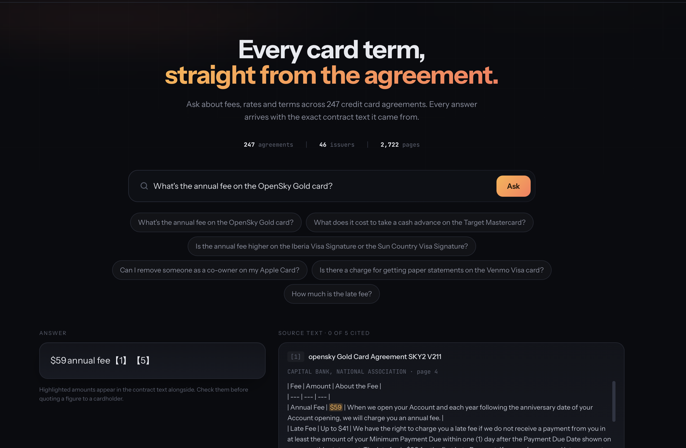
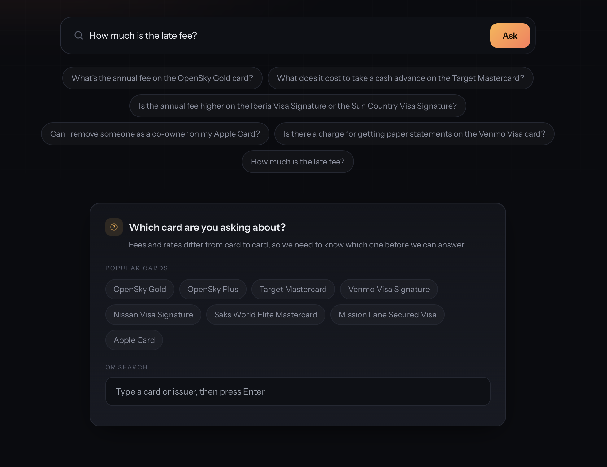

Projects / cardterms
RAG · Retrieval · Evaluation
CardTerms
Industry: Finance / Banking
A question answering chatbot for 247 US credit card agreements. Every answer comes with the exact contract text it was drawn from, so the citation makes the answer easier to trust. I built it to learn how RAG works and how to evaluate whether it is working.
Measured on 76 hand-written questions, 15 of which the contracts cannot answer.
Problem
Finding one number in near-identical contracts
Picture a customer support agent who needs the annual fee for one specific card. There are hundreds of credit card agreements, each dozens of pages long. Finding the number by hand means opening the right document and hunting through it.
The hard part is that the agreements are nearly the same. Issuers file from a shared template, so two documents can differ only by the brand name and a few numbers. A system that finds "a credit card agreement" is no help. It has to find the right one, then the right passage inside it.
I set four requirements:
- Find the right document.
- Find the right passage in it.
- Say "I can't answer that" when the contracts do not contain the answer.
- Always show the source text next to the answer.
I also gave myself a constraint: build it end to end at zero cost, using local models where they are enough and free hosted models where they are not.
The data is the CFPB's Credit Card Agreement Database from the Q1 2026 release: 247 agreements from 46 issuers, 2,722 pages in total. I pinned it to one quarter so my answer labels would stay valid.
Approach and architecture
Measure, improve, repeat
I treated this as a measurement project more than a modeling project. Before tuning anything, I wrote 76 test questions and marked the exact answer location in each contract. Then I improved the pipeline one stage at a time and kept a change only if the numbers said it helped.
The "which card?" check is plain code. It uses a list of card and issuer names built from the corpus itself.
Early on, 20 of the 26 retrieval misses found the right document but the wrong passage. That told me to spend my effort on ranking passages, not on finding documents.
Tools and methods
What I used and why
| Piece | What I used | Why |
|---|---|---|
| Parsing | PyMuPDF, per-page OCR, cell-level table extraction | The contracts are PDFs full of tables. A fee and its amount have to stay together. |
| Search | BM25 keyword search | It beat three embedding models on this near-identical text. |
| Reranking | bge-reranker-base (a cross-encoder) | It reads the question and each passage together, so it judges relevance better than the first search can. |
| Answering | gpt-oss-20b on Groq's free tier, with a local Llama 3.2 3B fallback through Ollama | The hosted model is more accurate. The local one works offline. |
| Judging | gpt-oss-120b as an LLM judge, checked against 30 hand-graded answers | Whether an answer is right takes reading, not string matching. |
| Storage | PostgreSQL with pgvector, in Docker | Holds the documents, chunks, and labeled questions. Vector columns let me compare embedding models. |
| Service | FastAPI and a single-page web client | The whole pipeline sits behind one API. The page shows the answer beside its source. |
| Statistics | McNemar and Wilcoxon tests, Cohen's kappa | To check whether a gain was real or just noise. |
Python 3.12 managed with uv. Docker Compose runs the database.
Demo
Watching it work


Results
What the measurements showed
How retrieval improved
Each row adds one change to the row above it. The score is hit@5: how often a correct passage appears in the top 5 results.
| Configuration | hit@5 |
|---|---|
| BM25 keyword search, 512-token chunks (baseline) | 0.574 |
| For comparison: best embedding model (bge-small) | 0.541 |
| Add the bge-reranker-base cross-encoder, pool of 50 | 0.623 |
| Show the reranker the product and issuer name too | 0.639 |
| Add product and issuer name to the indexed text | 0.787 |
| Add entity-aware selection (final) | 0.820 |
Where the 13 misses came from
Of 76 questions, 63 were handled correctly: 49 answered right and 14 unanswerable ones correctly declined. I sorted the other 13 by the part of the system that would have to change.
| What happened | Count |
|---|---|
| Refused because the evidence was incomplete (a defensible call) | 5 |
| Wrong: the right passage was found but not in the top 5 | 2 |
| Wrong: answered with incomplete evidence | 1 |
| Refused even though the evidence was complete | 1 |
| Wrong: evidence was complete, the model misread it | 3 |
| Answered a question the contracts cannot answer | 1 |
That is 8 misses caused by retrieval and 5 by generation. Every time I fixed one stage, a different stage became the weakest. A single accuracy number could not show me that, so I tracked each stage separately.
Where the time goes
The median response is 7.7 seconds. The language model is only about 9% of that. The cross-encoder reranker is about 90%, because it reads roughly 25,000 tokens per question on a laptop GPU.
Decisions
The choices that shaped it
- Build the test set before tuning anythingI stored the correct answer as a character span in the contract, not as a chunk ID. Chunk IDs change every time I change the chunking, but spans do not, so one test set could score all nine chunking strategies. The loader also rejected any quote that was missing from its document or appeared more than once. That caught 13 bad labels that would have quietly dragged down every recall number.
- Use keyword search, not embeddingsI compared BM25 with three embedding models. BM25 won (0.574 against 0.541, 0.492 and 0.410). The contracts are near-identical legal text, and questions turn on exact product names and dollar amounts, which keyword search handles well. The larger bge-base model scored worse than the smaller bge-small.
- Put the card name inside every chunkMany chunks were bare table rows like "Annual Fee | $89" that name no card. Adding the product and issuer name to the indexed text raised hit@5 from 0.639 to 0.787, and it improved the candidate pool itself, not just the ordering.
- Let the numbers choose what to build nextBefore building hybrid search, I checked the ceiling: an oracle that picked the better method per question reached only 0.623 against 0.574, so I dropped it. Metadata filtering could help at most 6 of 26 failures, so I dropped that too. Reranking looked best, because 46 of 61 answers were already inside the top 50 but ranked too low.
- Test the reranker before trusting itOne popular reranker (ms-marco) made results 8 points worse, and bge-reranker-base made them about 5 points better. A pool of 100 candidates did worse than a pool of 50, since more candidates gave the reranker more chances to promote a wrong one.
- Reserve context slots for every card namedComparison questions mention two cards, but the top 5 often came from only one. Simple caps on passages per document did not help (they moved evidence between categories without creating any). Entity-aware selection did: it reserves slots for each named card and left single-card questions untouched.
- Move the "which card?" decision out of the prompt and into codeI tried two prompt rewrites, and rejected both. One made the model count cards by reading the retrieved passages instead of the question, and ambiguous questions got worse. A short piece of code that checks which cards the question names fixed it, taking ambiguous questions from 1 of 5 to 5 of 5.
- Change the generator, not the promptOn 11 known grounding failures with the same prompt and retrieval, a local 3B model fixed 0, an 8B model fixed 8, and a 70B model fixed 9. I picked the 8B because it was the largest model I could fully test within the free tier's daily limit.
Tried and dropped
Hybrid keyword plus embedding search, metadata filtering, an approximate vector index (it saved about 12 ms on a request that takes seconds, and made runs harder to compare), per-document caps, two prompt rewrites, bge-base, 256-token chunks, and a candidate pool of 100. Each one was built or measured first, then dropped on evidence.
Challenges
What broke and how I fixed it
Parsing bugs do not show an error. The text just looks fine while being wrong. After these, I added checks to every stage that fail the build when something is off.
- Table detection was deleting real textPyMuPDF read indented lists and multi-column prose as sparse tables, then left them out of the body text. A fill-ratio threshold fixed it. For one issuer, detected tables dropped from 349 to 46.
- Five documents extracted as meaningless textTheir embedded fonts had no character mapping, so extraction returned glyph codes. I caught it by counting common English words: affected files scored 0.0 to 0.8 per thousand characters, against 20 to 45 for normal ones. OCR recovered them. Left alone, they would have put about 90,000 characters of noise into the index.
- Picking the largest file selected Spanish translationsSpanish versions are longer than the English originals, so every Bank of America filing I had chosen was Spanish only. That quietly removed a top-three issuer from an English system.
- Chunking bugs that raised no errorsOne strategy counted table text twice. Another had a 15% overlap setting that changed only 4 of 5,733 chunks, so it did nothing. I found both by verifying chunk output against the source.
- The provider retired my modelsAll three Llama models were removed from the free tier after my experiments, and the app started returning 404 errors. Because I had an evaluation harness, requalifying a replacement took one command. I switched to gpt-oss-20b and re-ran all 76 questions. Retrieval came back identical to four decimals, which confirmed nothing else had drifted, and end-to-end accuracy rose from 73.7% to 82.9%.
- Free-tier speed limitationsThe hosted model allows about 1.3 questions per minute. I report that separately from latency, since it is a throughput cap and not a slow system.
How I verified the AI's work
Checking that the numbers were true
- A good metric was hiding a failurehit@5 counts a question as answered once one relevant passage arrives. A question comparing two cards could score a full point while the model saw five passages about only one of them. I added a second metric, evidence coverage, which asks what share of the needed documents contributed a passage. Comparison questions scored 0.636 on hit@5 but only 0.409 on evidence coverage. After the fix, that rose to 0.614.
- The shortcut check overstated accuracyThe shortcut was to check whether the expected figure appears anywhere in the answer. It reported 91%. But it cannot tell "the annual fee is $59" from "$59 is the cash advance fee." The calibrated judge reported 68%, so real accuracy was about 23 points lower than the shortcut said.
- I calibrated the judge instead of trusting itI graded 30 answers by hand, with the judge's verdicts hidden, then compared. Cohen's kappa was 0.929. I used kappa because on a set where most answers are correct, a judge that always says "correct" would score well on plain agreement and know nothing. The one disagreement was between neighboring categories, and in the lenient direction.
- The judge cannot be the model being gradedMy first judge was the generator itself, which tends to favor its own output. I moved to a larger, different model, and kappa against the same 30 labels rose from 0.871 to 0.929.
- I audited my own answer keyThe loader had verified every quote, but nothing had checked the reference answers written from those quotes. I checked all 76 and found two wrong, both claiming a clause the quote did not support.
- Gains had to survive a significance testEvery retrieval gain was checked with paired tests. For example, reranking alone had McNemar p = 0.34 but Wilcoxon p = 0.031. The first test saw 10 questions change and the second saw 31. Reporting only one would have hidden a real effect.
- Guardrails in the product itselfThe model may answer only from the five passages, must cite them, and returns a refusal token when the answer is missing. It declined 14 of the 15 unanswerable questions. The interface always shows the source text, because 6 answers were wrong while still citing a passage.
What I would improve
Limits and next steps
This is a prototype for a support agent to search agreements quickly. It is not a tool to answer cardholders directly without review.
Known limits
- Six answers are wrong while citing a passage, which is why the source text is always shown.
- Comparison questions are still the weakest, at 61% evidence coverage.
- A card that is not in the corpus can still get a confident wrong answer (the American Express Platinum question is one example).
- The test set is small, and one filter threshold was tuned on the same 76 questions, so one p-value is optimistic.
- The offline fallback runs at 69.7% accuracy and about 40 seconds per question.
With more time, in this order
- Structured extraction of fee tables, since the remaining grounding failures read the wrong row of a table, mostly APR ranges and comparisons.
- Reduce the candidate pool the reranker reads, for example from 50 to 25. I expect this to cut the response time by about half, since the reranker takes about 90% of it. I have not yet measured how much accuracy it would cost.
- Count near-identical filings from one issuer as one piece of evidence. The metric currently counts three near-duplicate Bealls documents as three.
What I learned
Four things I will take into my next project
- Look at each stage, not just the overall score.A good overall number can hide a weak spot. When one metric could not show a problem, I added another one that could.
- Do not rely on shortcuts to check answers.A quick automatic check said 91% and the calibrated judge said 68%. Now I compare any automated grader against answers I graded by hand before I trust its number.
- Prompt changes aren't always sufficient.What actually helped was moving one decision into code and trying a different model.
- Build an evaluation harness.Having an evaluation harness makes it easy to replace a model when it gets retired.